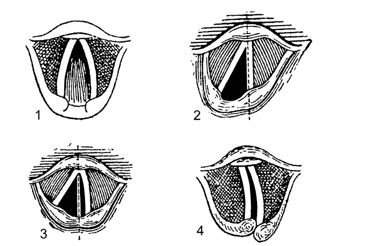
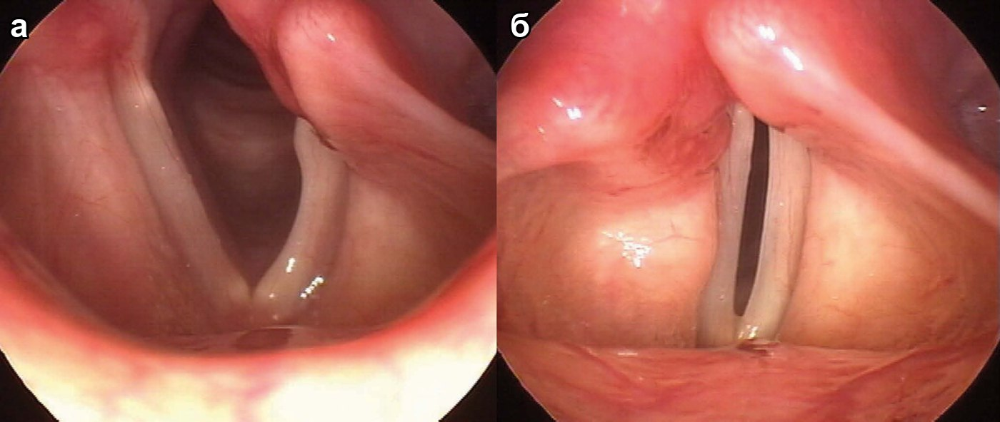

Нарушения голоса, парезы и параличи гортани
Параличи и парезы гортани
Определение
Паралич гортани — расстройство двигательной функции в виде полного отсутствия произвольных движений вследствие нарушения иннервации соответствующих мышц. Парез гортани — уменьшение силы и (или) амплитуды произвольных движений, обусловленное нарушением иннервации соответствующих мышц; подразумевает временное, до 12 мес, нарушение подвижности одной или обеих половин гортани. по: Нац. руководство, 2016, с. 881
Параличи и парезы гортани относятся к нервно-мышечной патологии и могут как возникать в результате органических поражений двигательных нервов, иннервирующих внутренние мышцы гортани, так и носить функциональный характер при различных нервно-психических расстройствах. по: Бабияк и соавт., т. 2, с. 192
Эпидемиология
Среди хронических заболеваний голосового аппарата паралич гортани занимает второе место и составляет 29,9%.
Классификация
Параличи гортани, в зависимости от уровня повреждения, подразделяют на центральные и периферические, одно- и двусторонние. по: Нац. руководство, 2016, с. 881
Параличи и парезы гортани делятся на миогенные, нейрогенные и психогенные. Миогенные, или миопатические, параличи гортани, зависящие только от патологических изменений в мышцах, наблюдаются весьма редко и могут быть обусловлены некоторыми гельминтозами (трихинеллез), инфекционными заболеваниями (туберкулез, брюшной тиф), а также банальным хроническим воспалением, врожденной миопатией, переутомлением в результате голосовой нагрузки и др. по: Бабияк и соавт., т. 2, с. 192
Этиология
Паралич гортани — полиэтиологичное заболевание. Оно может быть обусловлено сдавлением иннервирующих её структур или вовлечением нервов в патологический процесс, развивающийся в этих органах, их травматическим повреждением, в том числе при хирургических вмешательствах на шее, грудной клетке или черепе.
Параличи центрального генеза, в зависимости от топографии поражения по отношению к nucleus ambiguus, условно разделяют на надъядерные (кортикальные и кортикобульбарные) и бульбарные. Кортикальные параличи всегда двусторонние в соответствии с иннервацией от двигательного ядра; возможные их причины — контузия, врождённый церебральный паралич, энцефалит, билирубиновая энцефалопатия, диффузный атеросклероз сосудов головного мозга. Кортикобульбарный паралич может возникать в результате повреждения области перекрёста кортикобульбарного тракта, например, при недостаточности кровообращения в бассейне позвоночной артерии, окклюзии последней. Бульбарный паралич может быть следствием нарушения кровообращения в бассейнах позвоночной, задней и передней нижней мозжечковой, верхних, средних, нижних латеральных ветвей мозжечковых артерий; а также полисклероза, сирингобульбии, сифилиса, бешенства, энцефалита, полиомиелита, внутримозжечковых опухолей. Для развития симптоматики паралича гортани достаточно частичного повреждения ядра. Паралич гортани центрального генеза составляет примерно 10% случаев. по: Нац. руководство, 2016, с. 881–882
Основные причины периферического паралича гортани:
- медицинская травма при операции на шее и грудной клетке;
- сдавление нервного ствола на протяжении за счёт опухолевого или метастатического процесса в области шеи и грудной клетки, дивертикула трахеи или пищевода, гематомы или инфильтрата при травмах и воспалительных процессах, при увеличении размеров сердца и дуги аорты (тетрада Фалло, митральный порок, аневризма аорты, гипертрофия желудочков, дилатация лёгочной артерии);
- неврит воспалительного, токсического или метаболического генеза [вирусный, токсический (отравления барбитуратами, органофосфатами и алкалоидами), гипокальциемический, гипокалиемический, диабетический, тиреотоксический].
по: Нац. руководство, 2016, с. 882
Самая частая причина паралича — патология щитовидной железы и медицинская травма при операциях на ней. При первичном вмешательстве частота осложнений составляет 3%, при повторном — 9%; при хирургическом лечении рака щитовидной железы — 5,7%. У 2,1% больных паралич диагностируют на дооперационном этапе. по: Нац. руководство, 2016, с. 882
Нейрогенные параличи внутренних мышц гортани делят на периферические, обусловленные поражением двигательных нервов, и центральные, возникающие при поражении бульбарных ядер этих нервов, вышестоящих проводящих путей и центров.
Периферические нейрогенные параличи внутренних мышц гортани обусловлены поражением блуждающих нервов, в частности их ветвями — возвратными нервами. Последние иннервируют все внутренние мышцы гортани за исключением передних перстнечерпаловидных мышц, натягивающих голосовую щель и отводящих голосовые складки. Значительная протяженность возвратных нервов, их непосредственный контакт со многими анатомическими образованиями, подвергающимися влиянию различных патологических состояний и хирургическим вмешательствам, их обратный ход из грудной полости в гортань — все это отрицательно сказывается на их защищенности и увеличивает риск повреждения. Причинами повреждения могут быть: для левого возвратного нерва — аневризма дуги аорты, которую этот нерв огибает; для правого нерва — плевральные спайки на верхушке правого легкого; для обоих нервов — экссудативные и рубцовые процессы в перикарде и плевре, опухоли и гиперплазия лимфоузлов средостения, опухоли пищевода, зоб, рак щитовидной железы, опухоли и лимфаденит шейных лимфоузлов.
Невриты возвратного нерва могут развиваться вследствие интоксикации при ряде инфекционных заболеваний (дифтерия, тифы) и отравлении алкоголем, никотином, мышьяком, свинцом и др. Иногда возвратный нерв повреждается при струмэктомии. по: Бабияк и соавт., т. 2, с. 194
Патогенез
При параличе гортани страдают все три функции гортани. Выраженность клинической симптоматики и морфофункциональных изменений гортани зависит от степени денервации и характера компенсаторно-приспособительных изменений, положения парализованной голосовой складки, развития атрофических процессов в мышечном аппарате гортани, состояния перстнечерпаловидного сустава. Тяжесть заболевания при одностороннем параличе обусловлена незамыканием голосовой щели, а при двустороннем параличе, наоборот, срединным положением голосовых складок, приводящим к стенозу гортани.
Сроки наступления атрофии мышц гортани точно не определены, носят индивидуальный характер и зависят от степени денервации и удаления голосовой складки от средней линии. Атрофия голосовой складки ухудшает течение одностороннего паралича гортани, так как приводит к дополнительной её латерализации и снижению тонуса. Черпаловидные хрящи на стороне паралича часто смещены к здоровой стороне, ротированы кпереди. Результаты электромиографических исследований доказывают, что полная денервация голосовой складки с мышечной атрофией при параличе гортани развивается нечасто, в большинстве случаев диагностируют какой-либо уровень синкинезии и реиннервации. При длительно существующем параличе происходит анкилоз черпаловидного сустава, обнаруживаемый при зондировании.
Дыхательные пути защищены от аспирации во время глотания несколькими рефлекторными механизмами, включающими движение гортани вверх и наклон её вперёд, аддукцию голосовых складок, координацию дыхания и глотания. Такая защита нарушается при параличе гортани, особенно в ранние сроки его развития. В норме подъём гортани при глотании сопровождается закрытием голосовой щели. У пациентов с параличом гортани этого не происходит, неповреждённая голосовая складка занимает более возвышенное положение. Компенсация утраченных функций при одностороннем параличе гортани осуществляется посредством изменения напряжения аддукторов, форсирования голоса для повышения подскладкового давления, изменения конфигурации надскладкового пространства. Клинически это выражается в смещении голосовой щели при фонации в сторону паралича за счёт перемещения здоровой голосовой складки на противоположную сторону, гипертрофией вестибулярных складок. При двустороннем параличе гортани с интермедианным положением голосовых складок чаще со временем происходит их смещение к средней линии с развитием стеноза гортани. по: Нац. руководство, 2016, с. 882–883
При параличе возвратного нерва сначала перестают функционировать задние перстнечерпаловидные мышцы, отводящие голосовые складки и расширяющие голосовую щель (опасность острой дыхательной обструкции гортани и асфиксии), затем через некоторое время обездвиживаются и другие внутренние мышцы гортани, и лишь после этого голосовые складки (при одностороннем поражении нерва — одна складка) занимают трупное положение — промежуточное между полным приведением и крайним отведением (рис. 20.21, 1).
Такая последовательность выключения из работы внутренних мышц гортани, наблюдаемая при поражении одного или обоих возвратных нервов и известная как закон Розенбаха—Семона, имеет большое клиническое значение, поскольку при одновременном поражении обоих возвратных нервов возникающее сначала приведение голосовых складок резко нарушает дыхание, что нередко требует экстренной трахеотомии. При одностороннем параличе возвратного нерва голосовая складка сначала занимает срединное положение (рис. 20.21, 2), оставаясь неподвижной. При фонации к ней примыкает здоровая складка — и голос звучит относительно удовлетворительно. Дыхание при этом остается свободным в покое и при небольших физических нагрузках. При распространении патологического процесса на приводящие мышцы, голосовая складка отходит от средней линии, на ней появляется вогнутость (рис. 20.21, 3) и затем она принимает трупное положение. Возникает охриплость голоса. Лишь через несколько месяцев, когда появляется компенсаторная гипераддукция здоровой складки (рис. 20.21, 4) и складка начинает при фонации плотно прилегать к неподвижной складке, голос приобретает обычное звучание, однако вокальные упражнения при этом практически невозможны. по: Бабияк и соавт., т. 2, с. 194–195

Клиническая картина
Паралич гортани характеризуется неподвижностью одной или обеих половин гортани. Нарушение иннервации влечёт за собой серьёзные морфофункциональные изменения — страдают дыхательная, защитная и голосообразовательная функции гортани.
Для параличей центрального генеза характерны нарушения подвижности языка и мягкого нёба, изменения артикуляции. по: Нац. руководство, 2016, с. 883
Основные жалобы при одностороннем параличе гортани:
- придыхательная охриплость различной степени тяжести;
- одышка, усиливающаяся при голосовой нагрузке;
- попёрхивание;
- боль и ощущение инородного тела на поражённой стороне.
по: Нац. руководство, 2016, с. 883
При двустороннем параличе гортани на первый план выходит клиническая симптоматика её стеноза.
Степень выраженности клинических симптомов и морфофункциональных изменений гортани при параличе зависит от положения парализованной голосовой складки и давности заболевания. Различают медианное, парамедианное, интермедианное и латеральное положение голосовых складок.
В случае одностороннего паралича гортани клиническая картина наиболее яркая при латеральном положении парализованной голосовой складки. При медианном симптомы могут отсутствовать, и диагноз устанавливают случайно при диспансерном осмотре. Такие параличи гортани составляют 30%. Для двустороннего поражения с латеральной фиксацией голосовых складок характерна афония. Дыхательная недостаточность развивается по типу синдрома гипервентиляции, возможно нарушение разделительной функции гортани, особенно в виде попёрхивания жидкой пищей. При двустороннем параличе с парамедианным, интермедианным положением голосовых складок отмечают нарушение дыхательной функции вплоть до стеноза гортани третьей степени, требующей немедленного хирургического лечения. Следует помнить, что при двустороннем поражении дыхательная функция тем хуже, чем лучше голос пациента.
Выраженность клинической симптоматики зависит и от давности заболевания. В первые дни отмечается нарушение разделительной функции гортани, одышка, значительная охриплость, ощущение инородного тела в горле, иногда кашель. В дальнейшем на 4–10 сут и в более поздние сроки наступает улучшение за счёт частичной компенсации утраченных функций. Однако при отсутствии терапии тяжесть клинических проявлений может со временем усилиться из-за развития атрофических процессов в мышцах гортани, ухудшающих смыкание голосовых складок. по: Нац. руководство, 2016, с. 883–884

Миопатические парезы
Они, как правило, носят двусторонний характер, поражают только мышцы, приводящие в движение голосовые складки. Это поражение может сочетаться со слабостью других мышц, например дыхательных (диафрагма, межреберные мышцы). Среди миопатических поражений мускулатуры гортани на первом месте по частоте возникновения стоит парез mm. vocales. При нем во время фонации между голосовыми складками образуется овальная щель. Такая форма щели возникает потому, что сохраняют свою функцию те приводящие мышцы, которые при фонации сближают голосовые отростки черпаловидных хрящей, в результате чего сближаются задние концы голосовых складок, в то время как голосовые мышцы из-за своей дряблости в этом процессе участия не принимают (рис. 20.20, 1).
Миопатический парез голосовых мышц проявляется охриплостью и слабостью голоса с потерей его индивидуальной тембровой окраски. Попытка форсировать голос сопровождается феноменом «продувания гортани», заключающемся в излишнем расходовании на фонацию запаса находящегося в легких воздуха. При разговоре больные вынуждены чаще, чем обычно, прерывать свою речь для нового вдоха.
При изолированном двустороннем параличе латеральных перстнечерпаловидных мышц голосовая щель приобретает форму неправильного ромба (рис. 20.20, 2). В норме эти мышцы смыкают голосовые складки по средней линии на всем их протяжении и тем перекрывают просвет гортани. При их параличе голосовая щель при попытке фонации остается зияющей, от чего феномен «продувания гортани» становится особенно выраженным, голос утрачивает звучность и больные из-за значительного расходования легочного воздуха вынуждены переходить на шепотную речь.
При параличе единственной непарной мышцы — поперечной черпаловидной мышцы (m. arytenoideus transversus) — во время фонации в заднем отрезке голосовой щели сохраняется просвет в форме небольшого равнобедренного треугольника (рис. 20.20, 3) на уровне голосовых отростков черпаловидных хрящей, в то время как остальные части голосовых складок полностью смыкаются. Эта форма паралича в наименьшей степени нарушает голосовую и дыхательную функции гортани.
Паралич голосовых мышц и поперечной черпаловидной мышцы при фонации сопровождается картиной, отдаленно напоминающей песочные часы (рис. 20.20, 4), она представляет собой комбинацию вариантов 1 и 3.
При параличе отдельных волокон задних перстнечерпаловидных мышц, обеспечивающих при фонации натяжение голосовых складок, возникает их несмыкание и флотирование свободных краев (рис. 20.20, 5), голос становится дребезжащим, утрачивает свою тембровую окраску и возможность интонировать высокие звуки. Этот феномен хорошо определяется при стробоскопии гортани.
При одностороннем параличе задней перстнечерпаловидной мышцы, являющейся единственной парной мышцей, расширяющей голосовую щель, на вдохе пораженная голосовая складка занимает срединное положение (рис. 20.20, 6) за счет тяги приводящих мышц; при двустороннем параличе этой мышцы возникает обструкция голосовой щели в результате того, что обе голосовые складки занимают срединное положение (рис. 20.20, 7).
При параличе всех аддукторов гортани голосовые складки под влиянием тяги задних перстнечерпаловидных мышц занимают положение крайнего отведения (рис. 20.20, 8) — и фонация становится практически невозможной, при этом дыхательные экскурсии голосовых складок отсутствуют.
![Рис. 20.20. Эндоскопическая картина при различных вариантах паралича внутренних мышц гортани (по Lacroix P., 1906): 1 — паралич внутренних щиточерпаловидных мышц (фонация); 2 — паралич боковых перстнечерпаловидных мышц (фонация); 3 — паралич черпало-черпаловидной мышцы (фонация); 4 — паралич щиточерпаловидных и черпало-черпаловидной мышцы (фонация); 5 — паралич перстнечерпаловидных мышц (фонация); 6 — правосторонний паралич задней перстнечерпаловидной мышцы (вдох); 7 — двусторонний паралич задних перстнечерпаловидных мышц (вдох); 8 — паралич приводящих мышц гортани (фонация)](img/tb-par-lacroix-myshcy.jpg)
Острый двусторонний паралич возвратных нервов
Клиническая картина при остром двустороннем параличе возвратных нервов типична: больной сидит неподвижно на кровати, опершись руками о ее край, на лице выражение крайнего испуга, дыхание редкое стридорозное, надключичные ямки и надчревная область на вдохе западают, при выдохе выпячиваются, губы цианотичны, пульс частый. Малейшее физическое усилие приводит к резкому ухудшению состояния больного. Лишь потом, когда голосовые складки принимают трупное положение (не ранее чем через 2–3 дня) и между ними образуется щель не более 3 мм, дыхательная функция несколько улучшается, однако физическая нагрузка по-прежнему вызывает явления общей гипоксии.
Центральные параличи гортани
Они обусловлены бульбарными ядерными и надъядерными проводниковыми поражениями и могут возникать при разнообразных заболеваниях и поражениях головного мозга.
Бульбарные параличи гортани возникают при прогрессирующей мышечной атрофии, множественном склерозе сосудов головного мозга, сирингомиелии, спинной сухотке, прогрессивном бульбарном параличе, кровоизлияниях, опухолях и гуммах продолговатого мозга и других заболеваниях, связанных с поражением ядерных образований ствола головного мозга, а также корковых центров пирамидной системы45 и соматотопическиорганизованных корково бульбарных проводящих путей. В последнем случае органические корковые параличи блуждающего нерва являются двусторонними из-за неполного перекреста, совершаемого этими нервными трактами до вступления их в ядра соответствующих двигательных нервов. Указанные корковые параличи вызываются кровоизлияниями, ин фарктнымиразмягчениями, опухолями, возникающими в кортико бульбарных проводящих путях и соответствующих моторных зонах коры головного мозга, обеспечивающих произвольные движения внутренних мышц гортани.
Синдромальные параличи гортани
Эти параличи обычно возникают при различных миопатических синдромах, при врожденной гипоплазии нервно-мышечных синапсов, синдроме Макардла, спастических параличах, при некоторых формах миотонии.
Миастенические синдромы по своим признакам напоминают классическую форму миастении. Они обусловлены патологическим состоянием нервно-мышечного синапса, т. е. нарушением передачи возбуждения с нервного волокна на холинергические структуры мышцы. От этого состояния следует отличать миастеноподобные состояния, не связанные с нарушением синаптической передачи нервного возбуждения и обусловленные органическим поражением головного мозга, желез внутренней секреции, а также патологией углеводного и минерального обмена. Несмотря на то, что в последних случаях иногда наблюдают положительный эффект от введения антихолинэстеразных препаратов (прозерин, галантамин, физостигмин и др.), этот факт не свидетельствует об истинной миастении, при которой введение этих препаратов дает значительный, хотя и временный, положительный эффект.
Миастенический синдром Ламберта—Итона возникает при бронхогенной карциноме, поражении щитовидной железы и характеризуется значительным нарушением выхода ацетилхолина из везикул в пресинаптическом отделе двигательного нервного волокна, хотя количество этого медиатора в многочисленных везикулах даже избыточно. Синдром чаще встречается у мужчин после 40 лет и может предшествовать развитию основного заболевания. Синдром проявляется мышечной слабостью и атрофией мышц, снижением или выпадением глубоких рефлексов, патологической утомляемостью ног, реже — рук. Группы мышц, иннервируемые черепными нервами, страдают реже, однако при их вовлечении в патологический процесс могут наблюдаться парезы и параличи, в том числе экстраокулярных и интраларингеальных мышц. В последнем случае речь становится тихой и невнятной из-за слабости артикуляционного аппарата. Попутно следует заметить, что многие «необъяснимые» случаи гиперакузии возникают именно из-за миастени ческого поражения мышц барабанной полости.
Врожденная аплазия нервно-мышечного синапса, проявляющаяся миастеническим синдромом, подтверждается электронно-микроскопическим исследованием: синапсы в таких случаях напоминают синапсы эмбриональных мышц. Клинически отмечается выраженная гипотония мышц, нередко снижены или выпадают сухожильные рефлексы. Заболевание чаще наблюдается у женщин. Применение неостигмина метилсульфата или галантамина дает положительный эффект. Голос у таких больных обычно ослаблен, громкая речь или крик не удаются или возможны на непродолжительное время.
Синдром Макардла возникает при наследственном гликогенозе (болезни Гирке) — заболевании, вызванном своеобразным расстройством углеводного обмена, ведущим к нарушению процессов гликогенолиза и гликогенеза с одновременным нарушением белкового и липидного обмена. Заболевание врожденное, крайне редкое. Клинические проявления начинаются уже в детстве и выражаются в том, что после незначительной физической нагрузки возникают боль в мышцах, их быстрое утомление и слабость, миоглобинурия, поздняя мышечная дистрофия, сердечная недостаточность, нередко — слабость гладкой мускулатуры. Синдром обусловлен дефицитом фосфорилазы в мышечной ткани, вследствие чего задерживается расщепление гликогена, который в избыточном количестве накапливается в мышцах.
Миотонии
Этот вид нарушений характеризуется поражением сократительной функции мускулатуры, выражающимся в особом состоянии, при котором сократившаяся мышца с трудом возвращается в состояние расслабления. Явление это чаще наблюдается в поперечнополосатой мускулатуре, но может иметь место и в гладкой мускулатуре. Примером может служить симптом тонического зрачка (СТЗ), входящий в синдром Эди, обусловленный селективной дегенерацией ганглиев задних корешков спинного мозга и ресничного ганглия. Заболевание проявляется в возрасте 20–30 лет вялой реакцией зрачка на свет и темноту, снижением или полным отсутствием сухожильных рефлексов. Симптом тонического зрачка характеризуется тем, что его расширение или сужение после перемены освещения держится необычайно длительно.
Миотония произвольной мускулатуры в чистом виде наблюдается при особом заболевании, носящем название врожденной миотонии, или болезни Томсена. Заболевание является разновидностью наследственной миопатии с аутосомным типом наследования. При этом заболевании морфологических изменений в центральной и периферической нервной системе не находят. В патогенезе этого вида миотонии имеют значение нарушение проницаемости клеточных мембран, изменение ионного и медиаторного обмена в звене «кальций—тропонин—актомиозин», а также повышенная чувствительность тканей к ацетилхолину и калию. Заболевание обычно начинается в школьном возрасте, иногда первые признаки болезни проявляются сразу же после рождения, а к 4–5 месяцам возникает гипертрофия мышц. Течение медленное, прогрессирующее в первые годы с последующей стабилизацией. Нередко впервые диагностируется во время прохождения военно-врачебной комис сии при поступлении на военнуюслужбу.
Основным симптомом феномена миотонии является нарушение движений, заключающееся в том, что после сильного сокращения мышц последующее их расслабление затруднено, но при неоднократном повторении данного движения оно становится все более свободным и, наконец, нормальным. После непродолжительного покоя феномен миотонии повторяется с прежней выраженностью. Миотонические явления могут распространяться на мышцы лица, на котором в этом случае сохраняется неадекватно долго какое либо выражение, на жевательные и глотательные мышцы и внутренние мышцы гортани; при этом возникают затруднения при жевании, глотании и фонации. Жевательные движения становятся медленными, глотание осуществляется с трудом, а внезапный резкий крик приводит к пролонгированному закрытию голосовой щели, которая медленно раскрывается лишь через несколько секунд. Проявления заболевания усиливаются при охлаждении тела или его отдельных частей, при физической нагрузке и психическом напряжении. Объективно определяют гипертрофию мышц, больные имеют атлетическоетелосложение (симптом Геркулеса), однако сила мышц относительно их объема снижена.
Функциональные параличи гортани
Они возникают при нервно-психических расстройствах, истерии, неврастении, травматическом неврозе. Основным признаком является «мнимая афония», при которой голос при смехе, кашле, плаче остается звучным, а разговорная речь становится возможной только шепотом. Функциональный паралич гортани чаще наблюдается у женщин и возникает как проявление истерического припадка или сильного эмоционального стресса. Нередко афония, возникающая при остром ларингите у невротика, продолжается функциональной афонией длительное время и после исчезновения всех проявлений воспаления, что следует учитывать практическим врачам. В этих случаях больного необходимо направить к психотерапевту. Функциональная афония, внезапно возникнув, также внезапно может исчезнуть. Обычно это происходит после крепкого продолжительного сна, бурного переживания какого-либо радостного события, внезапного испуга. Чувствительность слизистой оболочки глотки и гортани при функциональной афонии как правило, снижена, равно как и у большинства лиц с истероидным складом психики. по: Бабияк и соавт., т. 2, с. 192–198
Диагностика
Высокая частота встречаемости паралича гортани опухолевой природы диктует необходимость тщательного обследования пациентов с целью выявления злокачественных новообразований. При оценке анамнеза обращают внимание на длительность заболевания, поскольку это влияет на тактику лечения.
Лабораторные исследования
Проводят общеклиническое обследование. по: Нац. руководство, 2016, с. 884
Инструментальные исследования
Всем пациентам с параличом гортани неясного генеза обследование проводят по следующему алгоритму:
- рентгеновская или компьютерная томография гортани и трахеи;
- рентгеновская или компьютерная томография органов грудной клетки и средостения;
- рентгенография пищевода с контрастированием раствором бария сульфата, которое может быть дополнено эндофиброэзофагоскопией;
- УЗИ щитовидной железы, консультация эндокринолога;
- КТ головного мозга при наличии неврологической симптоматики или при подозрении на паралич центрального генеза, консультация невролога.
по: Нац. руководство, 2016, с. 884
Клинико-функциональное состояние гортани определяют по показателям функции внешнего дыхания, микроларингоскопии и микроларингостробоскопии, акустического анализа голоса. Применяют электромиографию и глоттографию.
Дифференциальная диагностика
При одностороннем параличе гортани дифференциальную диагностику проводят с неподвижностью голосовой складки за счёт патологии перстнечерпаловидного сустава, включающей вывих, подвывих, артрит и анкилоз. Признаками вывиха считают отсутствие симметричности суставов, наличие признаков воспаления в области сустава, смещение черпаловидного хряща и ограничение подвижности или полную неподвижность голосовой складки на стороне повреждения. Для артрита характерны отёк и гиперемия слизистой оболочки в области сустава.
Дифференциальную диагностику патологии перстнечерпаловидного сустава осуществляют с помощью рентгеновской или компьютерной томографии, посредством которых хорошо визуализируется область перстнечерпаловидного сочленения; по данным электромиографии; определению электромагнитного резонанса, отражающего состояние внутренних пространств между мягкими тканями. Самым информативным считают метод эндоларингеального зондирования сустава зондом.
Показания к консультации других специалистов
При проведении дифференциальной диагностики паралича неясного генеза показаны консультации эндокринолога, невролога, пульмонолога.
Пример формулировки диагноза
Паралич правой половины гортани.
Лечение
Проводят этиопатогенетическую и симптоматическую терапию. Лечение начинают с устранения причины неподвижности половины гортани, например, декомпрессии нерва; дезинтоксикационной и десенсибилизирующей терапии в случае повреждения нервного ствола воспалительного, токсического, инфекционного или травматического характера. по: Нац. руководство, 2016, с. 884–885
Таблица 1. Методы лечения параличей гортани (по: Нац. руководство, 2016, табл. 13-1, с. 885)
| Виды лечения | Методы лечения |
|---|---|
| Этиопатогенетическое | декомпрессия нерва (удаление опухоли, рубца, снятие воспаления в зоне повреждения) дезинтоксикационная терапия (десенсибилизирующая, противоотёчная и антибиотикотерапия) улучшение нервной проводимости и предотвращение нейродистрофических процессов (трифосфаденин, витаминные комплексы, иглорефлексотерапия) улучшение синаптической проводимости (неостигмина метилсульфат) стимуляция регенерации в зоне повреждения (электрофорез и лечебно-медикаментозные блокады неостигмина метилсульфатом, пиридоксином, гидрокортизоном) стимуляция нервной и мышечной активности, рефлексогенных зон мобилизация черпаловидного сустава хирургические методы (реиннервация гортани, ларинготрахеопластика) |
| Симптоматическое | электростимуляция нервов и мышц гортани иглорефлексотерапия фонопедия хирургические методы (тиро-, ларингопластика, имплантационная хирургия, трахеостомия) |
Цели лечения
Цель лечения — восстановление подвижности элементов гортани или компенсация утраченных функций (дыхания, глотания и голоса).
Показания к госпитализации
Помимо тех случаев, когда планируется хирургическое лечение, желательно госпитализировать пациента на ранних сроках заболевания для проведения курса восстановительной и стимулирующей терапии.
Немедикаментозное лечение
Эффективно применение физиотерапевтического лечения — электрофореза с неостигмина метилсульфатом на гортань, электростимуляции мышц гортани. Используют наружные методы — непосредственное воздействие на мышцы гортани и нервные стволы, электростимуляцию рефлексогенных зон диадинамическими токами, эндоларингеальную электростимуляцию мышц гальваническим и фарадическим током, а также противовоспалительную терапию.
Большое значение имеет проведение дыхательной гимнастики и фонопедии. Последнюю применяют на всех этапах лечения и на любых сроках заболевания, при любой этиологии.
Медикаментозное лечение
При нейрогенном параличе голосовой складки независимо от этиологии заболевания немедленно начинают лечение, направленное на стимуляцию регенерации нервов на поражённой стороне, а также перекрёстную и остаточную иннервацию гортани. Применяют лекарственные средства, улучшающие нервную, синаптическую проводимость и микроциркуляцию, замедляющие нейродистрофические процессы в мышцах. по: Нац. руководство, 2016, с. 885–886
Хирургическое лечение
Методы хирургического лечения одностороннего паралича гортани:
- реиннервация гортани;
- тиреопластика;
- имплантационная хирургия.
по: Нац. руководство, 2016, с. 886
Хирургическую реиннервацию гортани осуществляют путём нейро-, мио-, нервно-мышечной пластики. Большое разнообразие клинических проявлений паралича гортани, зависимость результатов вмешательства от давности денервации, степени атрофии внутренних мышц гортани, наличия сопутствующей патологии черпаловидного хряща, разнообразных индивидуальных особенностей регенерации нервных волокон, присутствия синкинезий и плохо прогнозируемое извращение иннервации гортани с формированием рубцов в зоне операции ограничивают применение методики в клинической практике.
Из четырёх типов тиропластики при параличе гортани применяют первый (медиальное смещение голосовой складки) и второй (латеральное смещение голосовой складки). При тиропластике первого типа, помимо медиализации голосовой складки, черпаловидный хрящ смещают латерально и фиксируют швами при помощи окна в пластинке щитовидного хряща. Преимущество данного метода — возможность изменения положения голосовой складки не только в горизонтальной, но и в вертикальной плоскости. Применение такой техники ограничено при фиксации черпаловидного хряща и атрофии мышц на стороне паралича.
Наиболее распространённый метод медиализации голосовой складки при одностороннем параличе гортани — имплантационная хирургия. Эффективность её зависит от свойств имплантируемого материала и способа его введения. Имплантат должен обладать хорошей толерантностью к абсорбции, тонкой дисперсностью, обеспечивающей лёгкое введение; иметь гипоаллергенный состав, не вызывать выраженной продуктивной тканевой реакции и не обладать канцерогенными свойствами. В качестве имплантанта применяют тефлон, коллаген, аутожир и др. Способы инъекции материала в парализованную голосовую складку — под наркозом при прямой микроларингоскопии, под местной анестезией, эндоларингеально и чрескожно. Г. Ф. Иванченко (1955) разработал метод эндоларингеальной фрагментарной тефлон-коллагенпластики: в глубокие слои вводят тефлоновую пасту, которая составляет основу для последующей пластики наружных слоёв. по: Нац. руководство, 2016, с. 886–887
Среди осложнений имплантационной хирургии отмечают:
- острый отёк гортани;
- формирование гранулёмы;
- миграция тефлоновой пасты в мягкие ткани шеи и щитовидную железу.
по: Нац. руководство, 2016, с. 887
Хирургические методы лечения двусторонних параличей описаны в главе Стенозы гортани и трахеи.
Лечение описанных заболеваний определяется их природой; каждое из них требует тщательной диагностики, порой на уровне генетических методов исследования, комплексных биохимических методов, исследований метаболических процессов и т. д. Лишь после точного распознавания болезни, основанного на установлении ее этиологии и патогенеза, пациент адресуется к соответствующему специалисту или к ряду специалистов. Что касается нарушений функций гортани, то лечение при них носит симптоматический характер. по: Бабияк и соавт., т. 2, с. 198
Дальнейшее ведение
Лечение паралича гортани этапное, последовательное. Помимо медикаментозного, физиотерапевтического и хирургического лечения, пациентам показаны длительные занятия с фонопедом, цель которых — формирование правильного фонационного дыхания и голосоведения, коррекция нарушения разделительной функции гортани. Больных с двусторонним параличом необходимо наблюдать с периодичностью осмотров 1 раз в 3 или 6 мес в зависимости от клиники дыхательной недостаточности.
Пациентам с параличом гортани показана консультация фониатра для определения возможностей реабилитации утраченных функций гортани, восстановления голоса и дыхания в возможно ранние сроки.
Срок нетрудоспособности 21 день. При двустороннем параличе гортани трудоспособность пациентов резко ограничена. При одностороннем (в случае голосовой профессии) возможно ограничение трудоспособности. Однако при восстановлении голосовой функции эти ограничения могут быть сняты.
Прогноз
Для больных с односторонним параличом гортани прогноз благоприятный, так как в большинстве случаев возможно восстановление голосовой и компенсация дыхательной функций (при некоторых ограничениях физических нагрузок, поскольку при восстановлении смыкания голосовых складок голосовая щель на вдохе остаётся наполовину суженной). Большинство больных с двусторонним параличом гортани нуждаются в этапном хирургическом лечении. При возможности проведения всего курса восстановительного лечения вероятна деканюляция и дыхание через естественные пути, голосовая функция восстанавливается частично.
Профилактика
Профилактика заключается в своевременном лечении травмы гортани и патологии перстнечерпаловидного сустава.
Скрининг
Всем пациентам с охриплостью, больным до и после струмэктомии, длительной интубации или операций на шее и грудной клетке необходимо проводить ларингоскопию. по: Нац. руководство, 2016, с. 881, 887
Сенсорные дисфункции гортани
К этим дисфункциям относятся гиперестезия, парестезия и гипестезия слизистой оболочки, которые могут возникать по самым разным причинам: местные воспалительные и неопластические процессы, эндокринные дисфункции, вторичные осложнения ряда общих инфекционных заболеваний, неврозы (в том числе истерия).
Гиперестезия и парестезия гортани в подавляющем большинстве случаев возникают при воспалительных заболеваниях слизистой оболочки и ее лимфоидного аппарата, а также при злокачественных и доброкачественных опухолях и кризах спинной сухотки. Как правило, такие изменения чувствительности слизистой оболочки сопровождаются аналогичными симптомами со стороны гортаноглотки и трахеи. Симптомом гиперестезии является повышенная чувствительность указанных анатомических образований к разнообразным факторам, в норме не вызывающим неприятных ощущений. Это боль, зуд, першение, вызываемые факторами, поступающими как извне (с вдыхаемым воздухом, напитками, пищей), так и изнутри, при попадании их через слизистую оболочку ВДП и пищеварительного тракта. К внешним факторам могут относиться сухой или влажный, горячий или холодный воздух, ничтожное содержание в нем частиц дыма или паров летучих веществ, ряд ароматических соединений. Раздражение этими вещества ми провоцирует мучительный сухой кашель. К эндогенным факторам, наряду с веществами, растворенными в лимфе крови, относится и слизь, выделяемая слизистыми железами ВДП и содержащая антигеноподобные вещества, поступившие в нее из крови и лимфы, что особенно характерно для приступов бронхиальной астмы.
Парестезии гортани характеризуются возникновением нетипичных, отличающихся от боли или зуда ощущений, появляющихся не только при воздействии внешних раздражителей, но и спонтанно в виде комка в горле, ощущения сдавления или, напротив, отсутствием ощущения прохождения воздуха по гортани. Чаще всего такие парестезии возникают у истероидныхличностей или при некоторых психических заболеваниях. Дискомфорт, ощущение тугоподвижности и объективные затруднения при фонации, а также парестезии отмечаются при вторичном амилоидозе гортани44, возникающем как осложнение туберкулеза легких, бронхоэктатической болезни и других хронических гнойных и специфических процессов в организме.
Гипестезия и анестезия гортани встречаются редко и связаны с прерыванием верхнегортанного нерва или недостаточной его проводимостью, например при давлении опухоли или при ранении. Чаще эти расстройства чувствительности возникают при поражении ядра этого нерва или его надъядерных проводящих путей и соответствующих чувствительных корковых зон. по: Бабияк и соавт., т. 2, с. 191–192
Функциональная дисфония
Функциональная дисфония — нарушение голосовой функции, характеризующееся неполным смыканием голосовых связок при отсутствии патологических изменений в гортани; наблюдается при невротических состояниях. Синонимы: фонастения, афония (функциональная афония), гипотонусная, гипертонусная и гипо-гипертонусная дисфония (вестибулярно-складковый, ложноскладковый голос).
Заболевание диагностируют у 40% больных с расстройством голосовой функции. Стойкие гипотонусные дисфонии составляют 80% в структуре функциональных расстройств голосообразования.
Классификация и этиология
В зависимости от типа голосоведения и характера смыкания голосовых складок различают афонию; гипо-, гипер- и гипо-гипертонусную дисфонии. По этиопатогенетическому фактору выделяют мутационную, психогенную и спастическую дисфонию.
Основными этиологическими факторами развития функционального расстройства голоса считают конституциональные, анатомические, врождённые особенности голосового аппарата, перенапряжение голоса, психотравмирующие факторы, ранее перенесённые заболевания дыхательных путей, астенический синдром любой этиологии. Гипотонусные расстройства могут формироваться и на фоне длительного молчания, а также после хирургических вмешательств на гортани при атрофии голосовых складок. Тревожные и депрессивные расстройства — причина развития функциональной дисфонии в 29,4% и при спастической дисфонии в 7,1% случаев. У 52% пациентов с функциональной дисфонией диагностируют гормональные расстройства, чаще заболевания щитовидной железы. Другие причины — неврологические заболевания, такие как болезнь Паркинсона и миастения, черепно-мозговая травма, нарушение мозгового кровообращения и др.
Функциональные изменения обратимы, но в ряде случаев могут приводить к органическим изменениям гортани. Например, длительно текущая гипотонусная дисфония или психогенная афония приводит к развитию атрофического ларингита с формированием борозды голосовой складки. Одновременно с этим формируется ложноскладковая фонация, которая вызывает гипертрофию вестибулярных складок. Гиперкинетическая дисфония — причина формирования стойких нарушений микроциркуляции голосовых складок и появления гранулём, язв, полипов, узелков и другой патологии гортани.
Механизм развития заболевания во время мутации голоса связан с дискоординацией перехода от фальцетного механизма голосообразования к грудному. У мальчиков высота голоса понижается на октаву, голосовые складки удлиняются на 10 мм и утолщаются. У девочек высота голоса понижается на 3–4 полутона, а длина голосовых складок изменяется на 4 мм. В норме мутация завершается в течение 3–6 мес.
Клиническая картина
Таблица 2. Формы функциональной дисфонии (по тексту национального руководства, с. 878–879)
| Форма | Клиническая картина | Ларингоскопическая картина |
|---|---|---|
| Гипотонусная дисфония | Быстрая утомляемость голоса, придыхательная охриплость | Неполное замыкание голосовой щели при фонации: вытянутый овал, линейная щель или треугольник в задней трети голосовых складок |
| Гипертонусная дисфония | Фонация с напряжением мышц шеи, голос резкий, охриплость выражена | Усиление сосудистого рисунка, гиперемия, пересмыкание голосовых складок при фонации; со временем — ложноскладковый голос |
| Гипо-гипертонусная (вестибулярно-складковый голос) | Фонация на уровне вестибулярных складок | Гипертрофия вестибулярных складок; голосовые складки могут не просматриваться, при фонации смыкаются вестибулярные |
| Афония | Отсутствие звучности голоса при сохранении шёпотной речи | Отсутствие смыкания голосовых складок при фонации |
| Мутационная дисфония | Нарушения голоса в период мутации | Может быть нормальной; иногда усиление сосудистого рисунка, овальная щель или «мутационный треугольник» в задних отделах |
| Спастическая дисфония | Напряжённо-сдавленная прерывистая фонация, дрожание, охриплость, нарушение разборчивости речи | Абдукторная форма — признаки гиперфункциональной дисфонии; аддукторная — голосовые складки не смыкаются при фонации |
Для функциональной дисфонии характерно длительное расстройство голосовой функции — несколько недель, месяцев и даже лет. Отмечается её нестабильность, ухудшение голоса после нагрузки, на фоне ухудшения общего состояния, после перенесённых вирусных инфекций.
Диагностика
Большое значение для диагностики голосовых расстройств, особенно функциональной природы, имеет субъективная оценка голоса, которую можно дополнить нагрузочными тестами (например, чтением вслух в течение 40 мин), а также психологическим тестированием с целью выявления соматоформных расстройств.
Для дифференциальной диагностики голосовых расстройств проводят ларинго-, микроларинго-, микроларингостробо-, видеоларингостробо-, эндофиброларинготрахеоскопию, акустический анализ голоса, определение времени максимальной фонации, спектральный компьютерный анализ голоса, оценку функции внешнего дыхания, глото- и электромиографию, рентгеновскую томографию гортани и трахеи, КТ гортани. При гипотонусной дисфонии акустическое исследование выявляет уменьшение времени максимальной фонации в среднем до 11 с, снижение интенсивности голоса у женщин до 67 дБ, у мужчин до 73 дБ.
Дифференциальная диагностика необходима в случае афонии с двусторонним параличом гортани, когда у пациента сохраняется озвученный кашель. Возможно проведение теста с заглушением. При утрате слухового контроля за голосом возможно его полное восстановление. В процессе диагностики и лечения расстройств голосовой функции требуется мультидисциплинарный подход с привлечением к процессу реабилитации невролога, эндокринолога, психиатра и фонопеда.
Лечение
Подход к лечению функциональных дисфоний должен быть комплексным. Необходимо воздействие на этиопатогенетические факторы: лечение общесоматических заболеваний, соматоформных расстройств, санация очагов хронической инфекции. Цели лечения — формирование правильных навыков устойчивой фонации, повышение выносливости голосового аппарата. Госпитализация показана при необходимости проведения хирургического лечения.
Самый эффективный метод лечения функциональных расстройств голосовых функций — фонопедия, артикуляционная и дыхательная гимнастика. Активно применяют иглорефлексо-, психо- и физиотерапию, массаж воротниковой зоны. Из физиотерапевтических методов при гипотонусной дисфонии рекомендуют применять электростимуляцию мышц гортани диадинамическими токами, амплипульс, электрофорез на гортань с неостигмина метилсульфатом. Мутационная дисфония не требует специальной терапии, за исключением лечения сопутствующих заболеваний, рациональной психотерапии и фонопедии.
Лекарственная терапия при гипотонусной дисфонии включает стимулирующие средства (элеутерококка колючего корневища и корни, витамины группы B, неостигмина метилсульфат 10–15 мг внутрь 2 раза в день в течение 2 нед) и улучшающие микроциркуляцию голосовых складок препараты. При гипо-гипертонусной дисфонии и ложноскладковой фонации проводят общую и местную противовоспалительную терапию гипертрофического ларингита. Лечение спастической дисфонии проводят совместно с неврологами. Применяют ГАМК-ергические препараты, блокады мышц гортани, массаж мышц шеи и фонопедию.
При выраженной стойкой гипотонусной дисфонии показаны имплантационная хирургия или тиропластика, цель которых — усиление аддукции голосовых складок. При ложноскладковой фонации с гипертрофией вестибулярных складок хирургическое лечение заключается в удалении гипертрофированных участков вестибулярных складок. В некоторых случаях необходимо продолжать фонопедию в течение нескольких месяцев. При лечении лиц голосоречевых профессий, особенно вокалистов, требуется длительное наблюдение с коррекцией голосовой нагрузки. по: Нац. руководство, 2016, с. 876–880
Точка зрения зарубежных авторов
Немецкое руководство выделяет дисфонию вследствие неправильного использования голоса и мышечного напряжения: основной симптом — утомляемость голоса, больные ощущают боль в горле и шее, «ком в горле», голос с лёгкой или умеренной охриплостью; перегрузка голоса может привести к органическим изменениям — узелкам, полипам, кистам голосовых складок, контактным гранулёмам. При видеостробоскопии специфических находок нет, кроме щели в задних отделах голосовой щели в фазе смыкания у большинства больных. При психогенной (конверсионной) афонии голосовые складки при попытке фонации сближаются, но не смыкаются; лечение проводят логопед или психотерапевт, конверсионную афонию лечат сразу, при первом же визите. по: Behrbohm и соавт., разд. 5.1.3
Спастическую дисфонию немецкие авторы относят к фокальным дистониям, связанным с нарушением функции базальных ганглиев. Голос при ней характерен, но из-за редкости заболевания диагноз часто пропускают или ошибочно ставят функциональную дисфонию. «Золотым стандартом» лечения считают инъекции ботулинического токсина типа А в голосовые (щиточерпаловидные) мышцы, при абдукторной форме — в заднюю перстнечерпаловидную мышцу; инъекции повторяют каждые 3–4 месяца. Хирургическое лечение (миэктомия, нейрэктомия, тиропластика II типа) оставляют для случаев, когда ботулинический токсин недостаточно эффективен. по: Behrbohm и соавт., разд. 5.1.3.3
Источники
- Оториноларингология: национальное руководство / под ред. В. Т. Пальчуна. — 2-е изд., перераб. и доп. — М.: ГЭОТАР-Медиа, 2016. — Гл. 13, разделы «Функциональная дисфония» (Романенко С. Г.): с. 876–880; «Паралич гортани»: с. 881–887.
- Бабияк В. И., Накатис Я. А., Говорун М. И. Оториноларингология. Руководство. Т. 2. — СПб.: Питер, 2009. — Часть IV, гл. 20 «Болезни гортани»: нервно-мышечные дисфункции гортани — с. 191–198.
- Behrbohm H., Kaschke O., Nawka T., Swift A. Ear, Nose, and Throat Diseases with Head and Neck Surgery. — Stuttgart: Thieme. — Разд. 5.1.3 «Regulatory Voice Disorders».
Раздел «Учебник» — справочная теория, не клинические рекомендации. Тактика ведения пациента — по разборам КР.